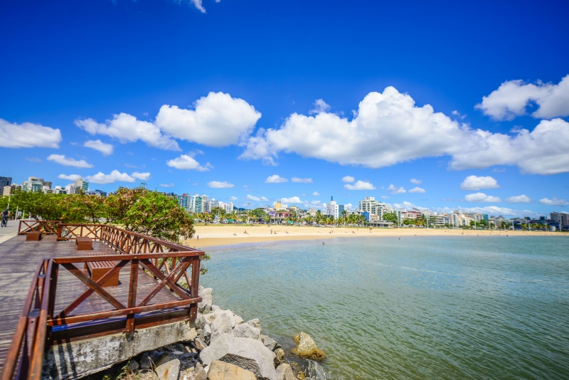
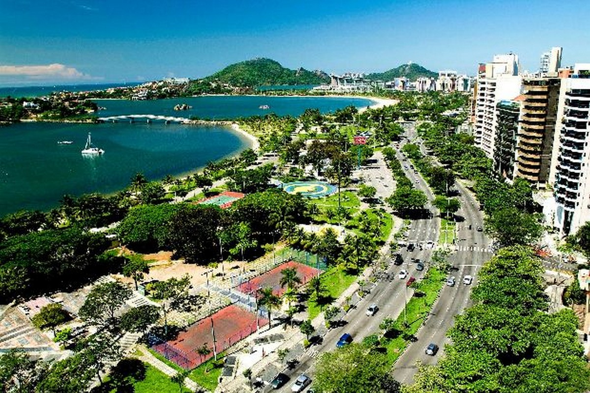

Vitória é a capital do estado de Espírito Santo, no sudeste do Brasil. É conhecida pelas praias arenosas como Camburi e Curva da Jurema. O centro da cidade inclui a Catedral Metropolitana do século XX, com vitrais. Nas proximidades, a degradada Capela de Santa Luzia data do século XVI. Junto ao rio de Santa Maria encontra-se o grande Palácio Anchieta, sede do governo do estado.  